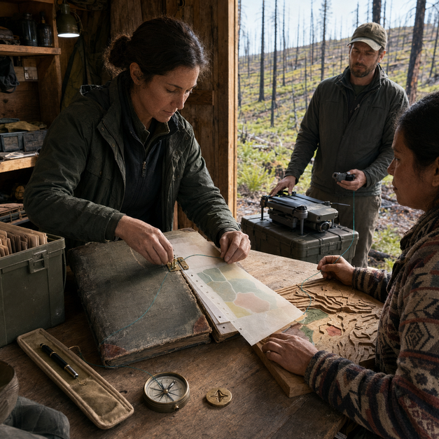

Starts fromA choice that needs to be made

SCN-058 · Choose & Govern
Preserve the text with its reasons and interpretation history
Koali preserves the text with its reasons and interpretation history, then applies the chosen decision procedures traceably; a rule can be executed without pretending to reconstruct the founder's personal intention for every new case. The continuity goal is to preserve why a choice was made through the work and outcomes it triggers.
ExampleA founder dies and leaves the company to a constitution rather than to heirs
FindUnderstandLearnCollaborateChooseActRespondRemember
← Back to the full MosaicKoali mechanism
Preserve why a choice was made through the work and outcomes it triggers.
System path
Konnaxion → Kollective Intelligence → Smart VoteKonnaxion → Kollective Intelligence → EkoHOrgo
How it moves
constitution → roles → interpretations → decisions → precedents → revision → continuity
Also useful forCompanies · Foundations · Communities